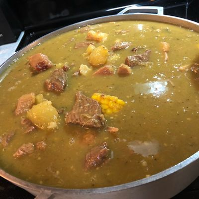

Sancocho
Home

Description
Dominican sancocho is a hearty stew made with different meats, root vegetables, plantains, and flavorful seasonings. It is a traditional dish often served during family gatherings and special occasions.
Ingredients
- Beef
- Chicken
- Pork
- Green plantains
- Yuca
- Yautia
- Pumpkin
- Corn
- Cilantro
- Oregano
- Garlic
- Salt
- Water
Steps
- Season the meats with garlic, oregano, and salt.
- Brown the meats in a large pot.
- Add water and let the meats cook until they start to soften.
- Peel and cut the root vegetables and plantains.
- Add the vegetables, plantains, pumpkin, and corn to the pot.
- Cook everything until the vegetables are soft and the broth is thick.
- Add cilantro and adjust the salt if needed.
- Serve hot with white rice or avocado.